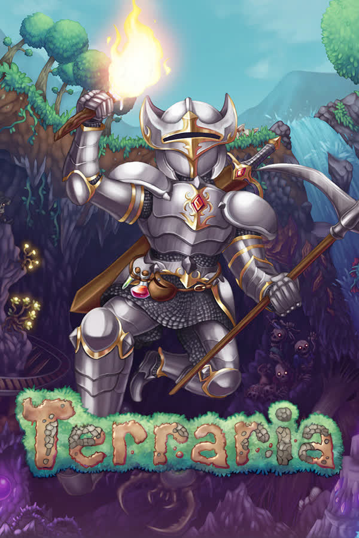
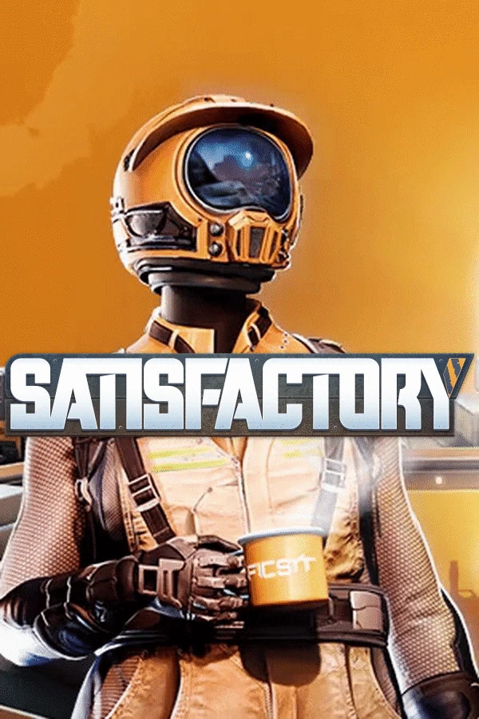
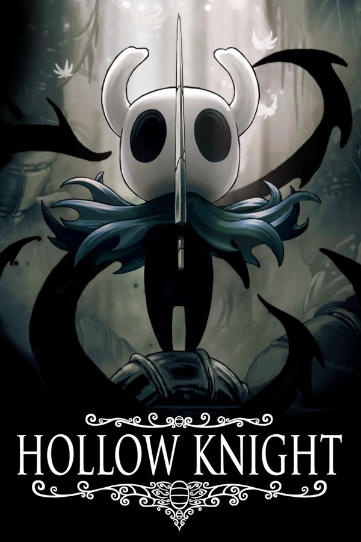
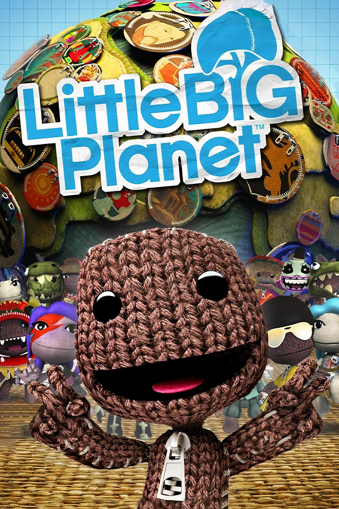
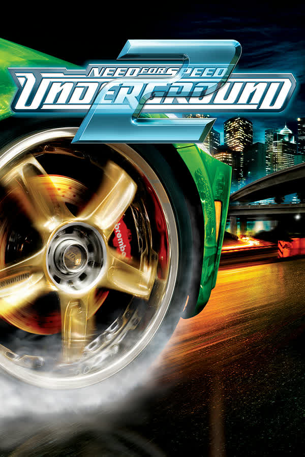

Minecraft is definetly my most favourite game with over 3000 hours of playtime (more than my entire Steam account). The creative freedom and modding is incredible.
Minecraft is definetly my most favourite game with over 3000 hours of playtime (more than my entire Steam account). The creative freedom and modding is incredible.

Terraria is probably my second most played game. As with Minecraft I really like the creative freedom the game gives you. I also like the combat progression.

I love Satisfactory for the creative freedom the build mode gives in combination with the automation aspect.

Factorio is really the peak of pure automation gameplay. It is just Excel with pretty graphics.

I like Hollow Knight for many things: the combat, the fluid controls, the atmosphere, the artstyle and the music.

Little Big Planet is a really cool game with its creative mode and memorable main levels.

I have spent way too much time driving around the map on my old PS2.